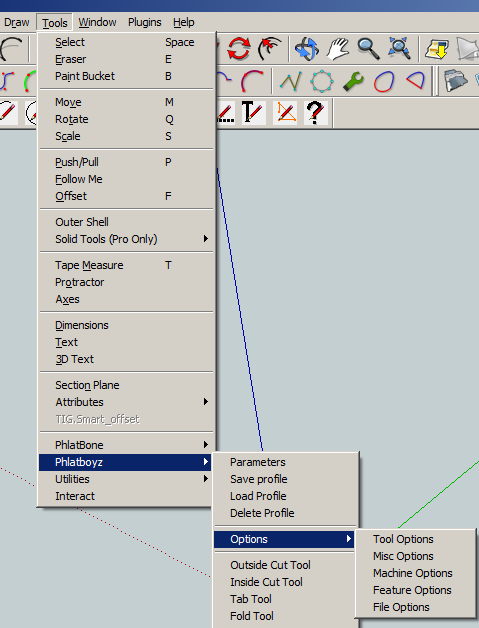
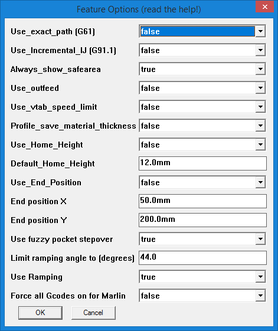

Oct 2014
HOWTO set default options
Please note that this mechanism supercedes the Constants.rb and MyConstants.rb files. However, DO NOT DELETE ANY FILES.
Current settings in Constants.rb and MyConstants.rb will be honored but overridden by this new settings mechanism, but the Constants.rb file is still required so please do not delete it.
 The Phlatscript system has long had a file called Constants.rb which contains a long list of constant values. Some of them are used only by the system and are not user settable while others were designed to be user settings that you set once and forget.
Current development of the system revealed that Constants.rb will be changing often as new features are added, thus presenting the problem of 'merging' the new file with your existing options such as default safe cut area and so on.
A new system had to be designed and the simplest is to have a secondary constants file in which you set your options. However, this proved to be complicated by changes in Windows 7 and 8, differing paths in Mac and Linux, and other niggles.
Thus the new Options Menu is an evolution of this default options mechanism and allow a user to set default settings that affect their computer or CNC machine environment using simple menus as shown at right.
The Options menu
The Options menu is found under Tools|PhlatBoyz|Options and comprises 5 items with subitems as follows:
- Tool Options
- Things affecting tools
- Misc Options
- Miscallaneous things
- Machine Options
- Things affecting your machine type and size
- Feature Options
- Things you may want to change to get different Gcode output options
- File Options
- Default file naming options
Tool Options
 These defaults will only be seen on new drawings. These settings should reflect your most commonly used cutting tool and material.
These settings can easily be overridden by using the Tool Profiles save and load mechanism.
These defaults will only be seen on new drawings. These settings should reflect your most commonly used cutting tool and material.
These settings can easily be overridden by using the Tool Profiles save and load mechanism.
- Default_spindle_speed
- This sets the default 'S' word written to the Gcode, which sets the spindle speed if your controller supports it.
- Default_feed_rate
- This is the default cutting feed rate in current drawing units per minute
- Default_plunge_rate
- In hard materials you need a slower plunge feed rate, set it here in drawing units per minute
- Default_safe_travel
- Height above the workpiece where it is safe to move rapidly to the next cut.
- Default_material_thickness
- The default material thickness in drawing units.
- Default_cut_depth_factor
- Set this to 100% if you are using a table type machine, or 110 to 140% for a Phlatprinter.
- Default_bit_diameter
- Set to your most commonly used bit size.
- Default_tab_width
- Set to 3X your most common bit size.
- Default_tab_depth_factor
- Experience will show you how much tab depth your prefer, set it here.
- Default_vtabs
- Normal tabs have vertical edges, V-tabs ave sloped edges and allow the cutter to keep moving at a constant speed. By setting this to true the default tab style willb e Vtab. You can still change it whiel placing tabs with the END key.
- Default_fold_depth_factor
- Your preferred fold depth factor in %
- Default_pocket_depth_factor
- Your preferred pocket depth factor in %
- Default_pocket_direction
- Set this to true to have pocket zigzags default to along Y axis, false for along X axis. This setting can be changed on the fly with the END key
Misc Options

- Default_comment_remark
- A default text string for the Comment area of the parameters. This will be written in the Gcode header.
- Default_gen3d
- This is normally false since most use of SketchUcam is for 2.5D cutting. Set to true if all you do is 3D.
- Default_show_gplot after output
- Set this to true to have the gplot program open with your new Gcode file EVERY TIME after generating Gcode.
- Default_tabletop is Z-Zero
- Set this TRUE if you want to always zero your tool to the table top instead of the material top. Phlatprinters must use the material top for Z-Zero (set this false), but all other machines can use the table top. If you fit an automatic tool zero sensor level with the table top, Mach3 and LinuxCNC make this very easy to use. Using the table as zero will also all you to generate Gcode that can cut many thicknesses of material up to the maximum of the thickness you specified.
- Use_compatible_dialogs set TRUE if you cannot see the parameters dialog
- This one is rather obvious. If the main Parameters Dialog shows up largely blank, you need to set this to true. Mac and Linux users will be most in need of this setting. Linux users running Sketchup under WINE can work around this issue by installing 'winetricks' and then issuing the command 'winetricks ie8'. This will install IE8 and allow the Parameters dialog to work correctly with this setting set to false.
Machine Options
 These options set defaults taken from the size and shape of your CNC machine. If you have more than one machine, set these to the largest
machines values and be careful when generating code for the smaller ones.
These options set defaults taken from the size and shape of your CNC machine. If you have more than one machine, set these to the largest
machines values and be careful when generating code for the smaller ones.
- Default_safe_origin_x
- Normally 0, this is where the safe area is placed by default.
- Default_safe_origin_y
- Normally 0, this is where the safe area is placed by default.
- Default_safe_width (X)
- Set this to the largest workpiece your machien can take in the X direction.
- Default_safe_height (Y)
- Set this to the largest workpiece Y size.
- Default_overhead_gantry
- If all you have is a Phlatprinter, set this to false. If all you have is a gantry type machine, set this to true. If you have both styles, set to the one you use the most.
- Default_multipass
- Set TRUE if you most often do multipass cuts
- Default_multipass_depth
- Set to your preferred multipass cut depth. Note that you can optimize multipass cuts by calculating this figure
so that the last pass is the same size as all other passes.
cuts = Overcut%/100 * MatThickness / Multipassdepth
will give you the number of passes at the current settings. If there are any numbers after the decimal point there will be 1 extra pass with that fraction of the multipass depth as the cut depth.
For example6mm material 2mm multipass depth 110% overcut cuts = 110/100 * 6 / 2 cuts = 3.3
will actually result in 4 passes, with the last pass being only 0.3*2 = 0.6mm deep.To optimize
- Round the number of cuts UP if the material is hard, DOWN if the material is soft
- 3.3 becomes 4 (for hard material)
- new multipass depth = 110/100 * 6 / roundedcuts
110 / 100 * 6 / 4 = 1.65mm
- Set multipass depth to 1.65 to achieve 4 equal passes.
- Default_stepover
- The default percentage of the tool diameter to stepover in pockets and in 3D cuts. Tool manufactuers discourage values between 30 and 70% as this shortens tool life, so for soft material use 70 or more and for hard materials use 30% or less.
- Min_z
- Set this to negative (-) your Z travel. Gcode will never contain Z travel more than this figure.
- Max_z
- Set this to your Z travel. Gcode will never contain Z travel more than this figure.
Feature Options
- Use_exact_path (G61)
- Set this to true to use G61. This will make the machine come to a complete stop when changing directions instead of rounding out square corners. When set to false the default for your CNC software will be used. Without G61 the machine will maintain the best possible speed for the cut even if the tool isn't true to the cut path. Rounded corners at low feedrates aren't very noticeable but anything over 200 starts to generate large radii so that the momentum of the machine can be maintained.
- Always_show_safearea
- Set this to true, if you want the safe area to always show, when parameters are saved.
Otherwise the safe area will only show, if it's size has been changed. - Use_reduced_safe_height
- Set this to true to use 1/3 of the usual safe travel height during plunge boring moves
- Use_pocket_CW
- Set this true to generate pocket outlines that cut in CW instead of usual CCW direction
Please research 'climb milling' before changing this.
Note this is a draw time option, if you change it in the Gcode you have to redraw all pocket cuts. - Use_plunge_CW
- Set this true to generate plunge hole cuts in CW instead of usual CCW cut direction
Please research 'climb milling' before changing this. - Use_outfeed
- Outfeed: phlatprinters only!
Set this to true to enable outfeed. At the end of the job it will feed the material out the front of the machine instead of stopping at X0 with the material out the back.
It will feed to 75% of the material size as given by the safe area settings. - Use_vtab_speed_limit
- Set this to true if you have an older version of Mach that does not slow down to the Z maximum speed during helical linear interpolation (G2/3 with Z movement A.K.A vtabs on an arc). Vtabs on arcs will cut at the defined plunge rate.
- Profile_save_material_thickness
- Set this to TRUE to have the material thickness saved and restored in Tool Profiles. Profiles that do not contain a material thickness will load just fine.
- Use_Home_Height
- Set this true and set the height and the Z will retract to this at the end of the job really only useful for overhead gantries
- Default_Home_Height
- If Use_Home_Height is true, then a G00 Z movement will be issued at the end of the job, using this height for Z.
If you have material top as Z-zero, it will retract this high above the material.
If you have table top as Z-Zero, it will retract this high above the table. - Use fuzzy hole stepover
- false = spiral hole boring will use the exact stepover percentage given in the parameters dialog.
This may create a very small depth of cut for the last cut.
- true = the stepover will be adjusted to give a whole number of steps of equal size.
If stepover% is less than 50% then the number of steps will be rounded UP to give a smaller stepover, for hard materials.
If stepover% is greater than 50% then the nubmer of steps will be rounded DOWN, for soft materials.
If stepover% is 50%, then no stepover rounding will be performed. - true = the stepover will be adjusted to give a whole number of steps of equal size.
File Options
 Some options that affect saving Gcode files.
Some options that affect saving Gcode files.
- Default_file_name
- The default gocode file name, with extension
- Default_file_ext
- The default extension to use for Gcode files. This will be added to the name if you do not give an extension in the save dialog.
- Default_directory_name
- The default directory to save Gcode into. Make sure it exists!